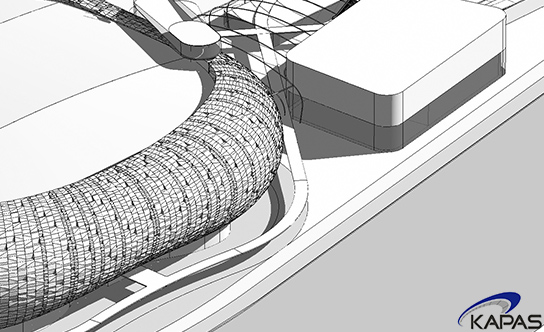
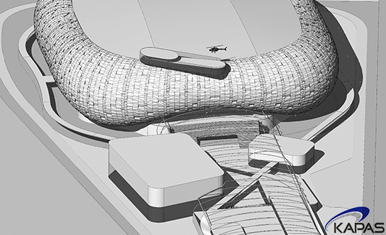
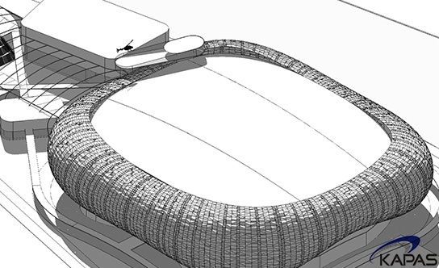

KAPAS
KAPAS is a leading arena service provider located in Seoul, Korea.
- 
- 
- 
- 기업명
- ㈜카파스
- 대표이사
- 강병석
카파스는 대한민국 서울에 위치한 아레나형 공연장 개발·운영 및 컨설팅 기업입니다.
카파스는 문화체육관광부에 아레나의 개념을 소개하고 2012년 7월부터 12월 31일까지 국제적 규모의 아레나를 국내에 건설하기 위한 타당성 검토 업무를 수행하였습니다.
카파스는 세계적으로 확산되고 있는 한류열풍을 바탕으로 국제적 수준의 랜드마크 아레나를 성공적으로 개발/운영하여 국내 공연시설 수준을 향상시키는 것을 목표로 하고 있습니다.
카파스는 부동산개발, 자산관리 및 미디어/엔터테인먼트 등 각 분야에서 폭넓은 경험을 보유하고 있는 전문가들로 구성되어 있으며 아레나 개발과 운영에 관련된 모든 서비스를 제공하고 있습니다.
궁금하신 사항은 "사업분야" 메뉴를 참고하시거나 카파스 팀에게 직접 문의해 주시길 바랍니다.